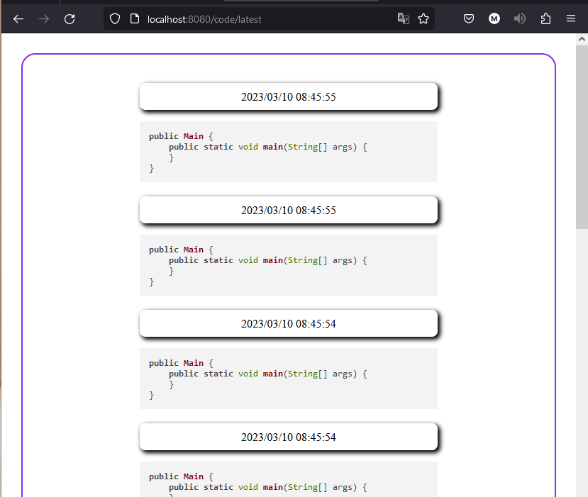
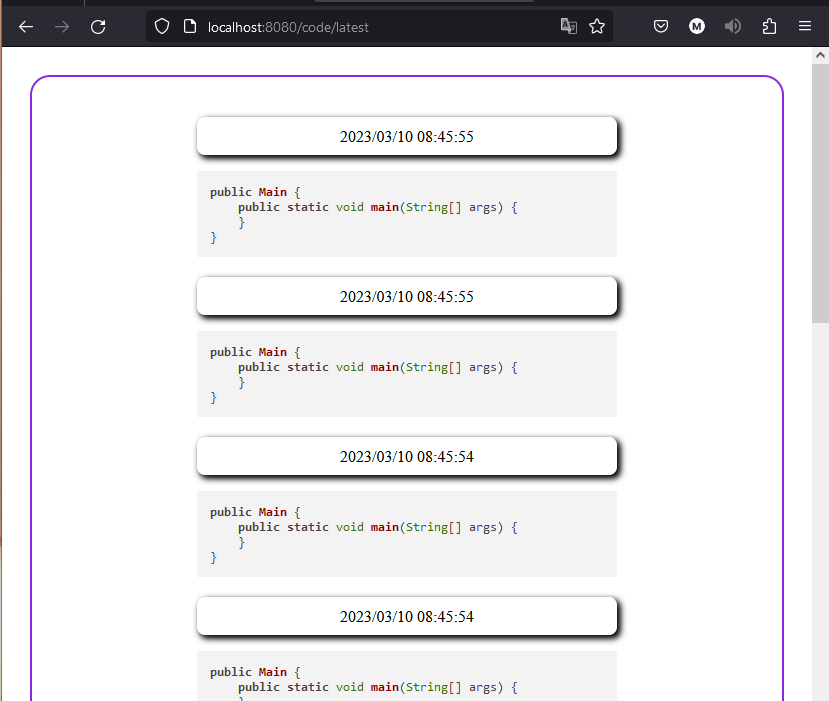

JavaCode Service
Code sharing platform
Code sharing platform
Developed a versatile Code Sharing Platform with both API and Service modes, facilitating seamless code sharing and retrieval for users.
The platform, backed by a robust database, ensures data persistence even if the server is temporarily shut down.
In API mode, developers can leverage endpoints to post, retrieve, and list code snippets, offering flexibility in building custom front-ends with HTML, JavaScript, or React. Codes can be posted with optional parameters for views and timers, affecting their visibility and access restrictions.
For users preferring a ready-made experience, the Service mode provides a minimalistic Web Forum and Web service. This mode generates HTML server-side and sends it to the user's browser for rendering.
The API service offers endpoints such as `/api/code/new` for posting new code snippets, `/api/code/{id}` for retrieving code details by ID, and `/api/code/latest` for fetching the latest public code snippets.
HTTP requests can be made to the provided endpoints for posting, retrieving, and listing code snippets in both Service and API modes.